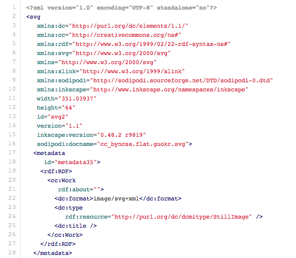
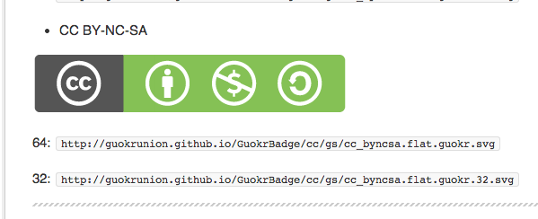
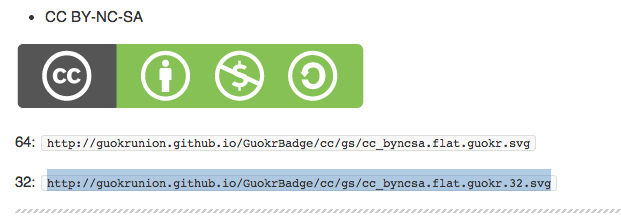
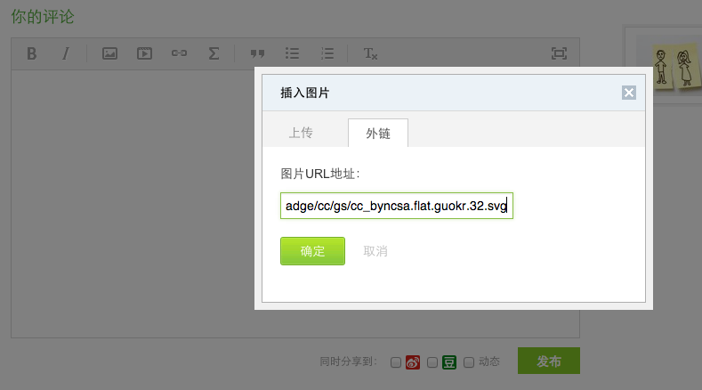
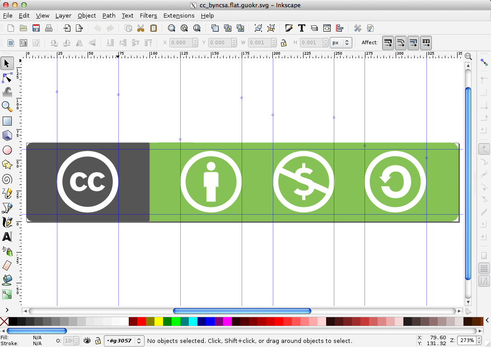
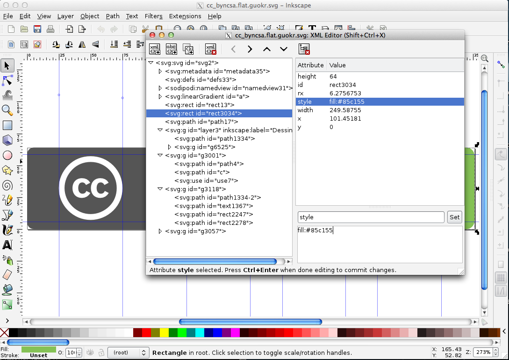
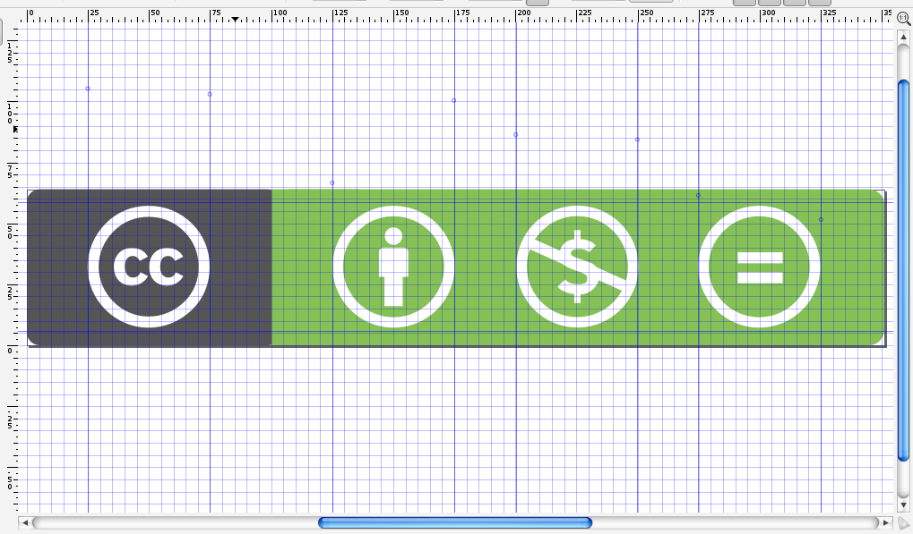
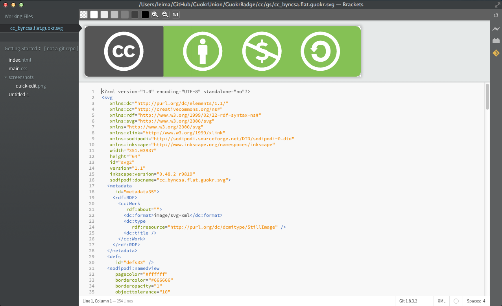
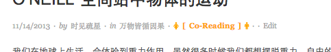

Creative Commons License 图标设计与 SVG
Creative Commons License 是一种比较常用的公共版权的授权。可以有针对的限制某些活动的同时保持作品可以被（部分的）公共使用。这篇文章不是讲 CC 是什么的，所以想了解更多的内容请去阅读 Wikipedia 或者 CC 官网 [1]。
SVG 图标
这篇文章要写的是，果壳网开放小组 [2]所设计的一种略带果壳风的设计。闲话少说，先看例子：

这是 CC BY-NC-SA 的图标，自然是由 CC + BY + NC + SA 组成，分别代表：CC 协议[Creative Commons]、（使用是按作者的要求）署名[Attribution]、非商业使用[Non-commercial]、（使用时）要以相同的方式共享[Share-alike]。
这个设计使用了三种颜色：
- #666666 ：左侧的背景色
- #FFFFFF ：字体颜色
- #85c155 ：右侧的背景色
并且使用了扁平风格，而不是拟物化的带各种突起和渐变的风格，原因是这些图标是作为（非官方的）果壳网用户个人选择授权的时候使用的，这样会跟网站比较搭。
制作的时候，除了最终生成的 PNG 图片，我们也提供了 SVG 图片。为什么选择 SVG 图片呢？
SVG，Scalable Vector Graphics，是一种矢量图。如果用文本编辑器打开一个 SVG 图片，我们会发现实际上就是 XML 代码。例如，上面那个 CC BY-NC-SA 的代码的开头部分：

所以说，实际上 SVG 中大部分都是用代码绘制出来的，当然，SVG 还可以使用很多 HTML 代码，例如链接、插入其他图片等等，也可以使用 javascript，例如可以实现点击一个节点后展开等等。
因为 SVG 缩放后不会变模糊（当然嵌入到里面的其他的像素图片可能会变模糊），所以常常用来制作各种图标，Logo 等等。而且著名的数据可视化 JavaScript 库，d3js 默认就是使用的 SVG，可以有很多图片互动。
这些图标的使用方法
如果没有接触过 CC, Copyleft 等协议，请先从官网等处（例如 CC 官网的程序 ）选择好合适的协议。然后从我们的 repo 的说明 （在这里 ） 中挑选自己喜欢的样式，然后从说明中复制出相应的链接，然后在自己的作品中使用 ( img src=”” ) 即可。或者可以从我们的 repo 中复制出自己需要的图片，然后放在自己的电脑或者服务器上，但是这种方法不能保证我们以后修改之后于我们同步。
例如，我们需要使用 CC BY-NC-SA 协议，而且喜欢这种胶囊形状的图标，并且我们想使用 SVG 图片，而不是 PNG 图片。那么从我们的 README.md 中找到这个协议（在目录中找到胶囊 + 果壳色 CC 协议 ~ SVG 版本）：

看到我们给出了两个不同大小的图片的链接，一个 64px, 一个 32px，这个大小指的是图标的高度。实际上这些 SVG 图片缩放不变，所以大小倒是没有那么重要，只是如果你在一些网站写作品，但是这个网站又不支持自定义图片大小，那么就不得不选择合适大小的图片了。
例如我们想要使用 32px 高度的图片，那么把那个图片链接复制出来：

然后在需要的地方使用即可。例如在果壳的编辑框中，插入图片是可以使用外链的，把上面复制的图片链接粘贴过来即可：

SVG 图标的制作
制作 SVG 图片，一个非常好用的开源软件是 Inkscape。编辑区域的截图：

当然也可以代码编辑：

作为图片编辑器的一个基本功能，Inkscape 也可以显示 Grid：

上图是在制作图片的时候，使用标尺功能。可以像 Adobe 系列的作图软件一样，从标尺往外拖出一些直线，用来校准。
当然，如果你是一个代码狂人，你也可以使用著名的前端工具 Brackets 来制作修改 SVG 图片：

会有实时预览，还算不错，如果仅仅改几个字，改一点颜色，即便不懂 SVG 也可以很轻松的修改图片。
关于果壳网开放小组
开房开放小组是一个以实际行动倡导开放代码、开放知识、开放数据的小组织，目前成员有程序员，物理学生等。点击这里或者下面图片查看我们的网站：
制作几种授权的图标只是这个小组织的多个 repo 之一。
致谢
在制作这些图标的时候，我们使用了来自 Wikipedia 的 Creative Commons License 词条下面的那些 SVG 图标，并且使用了 b.adge.me 的 Badge 模板。在此向这些作品的作者致以谢意。
同时开放小组的成员提供了很多参考，特别是 @光之存在者 （如他所说，是光之存在者了，终于……）提供的关于 SVG 的建议非常重要。
所以实际上我以个人的名义来发这篇日志是在不是那么合适，这是小组集体工作的结果，不过是借用关注的人数多这点来推广罢了。
授权
本文采用

P.S.
在博客添加了 TogetherJS 功能，可以点击文章上面的 Co-Reading 按钮：

获取一个链接，把链接通过 IM 工具分享给好友，就可以同时一起边分析边阅读了。当然，我的文章没这种深度，仅仅测试之用。
- 令人惊讶的 文言文版 。 ↩
-
一个
由果壳网用户成立的小组织：http://opentf.github.io/ ↩

最近评论